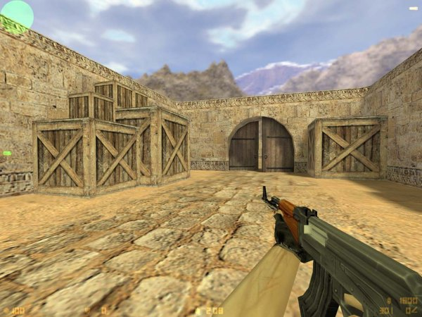

My favorite game mode is first-person shooting. The first time I played a first-person shooter game was when I was 8 years old playing Counter-Strike 1.6 game. Then I enjoyed playing against friends or enemy teams.

In 2016, Blizzard Entertainment announced that the new game name is
Overwatch. This new game features first-person shooting and online
competition.
Overwatch Competitive Play is the largest change Blizzard has made to
their massively popular first-person shooter since its May release.
The stated goal of this addition has been to create a game mode with a
more intense tempo for hardcore Overwatch gamers. Serious players can
hone their skills in tight battles against players of equal measure
and slowly gain ranks.